I am Sarah
The explorer
"I love to have fun and explore the world, while pursuing my modeling career."
- Looking for
- Something casual
- Happy with apps?
- Satisfied
SoulMate · Self-initiated research & concept
Most people on dating apps want a relationship, and most of them aren't finding one. Over three months, I researched why, combining a survey, fieldwork on the apps and a literature review. The research led to a concept that matches people on personality and rewards effort over volume.
From the survey: 59.8% of respondents chat with about 1 in 10 of their matches, and 84.8% meet about 1 in 10 of the people they chat with.
survey respondents across 13 countries
were not satisfied with the dating apps they use
would take a 15-minute personality quiz to get better matches
would pay for an app like this, compared with 28% for the apps they use now
People go to dating apps to find a partner. The apps are designed to keep them swiping.
Online dating is now the most common way couples in the US meet: a 2019 Stanford study found nearly 40% of couples first met online. Yet the leading apps match people mostly on photos, age and distance. Many people end up with plenty of matches and no real connection, and some start to feel like products on a shelf.
We started with a broad question: why is it so hard to find a compatible partner on apps built to do exactly that? We didn't want to start from a feature idea. We wanted to find the real problem first and let the research shape the product.
People who want a meaningful relationship and are open to finding it through an app. Many have tried the current apps and felt let down, and they would put in more effort if it led to better matches.
No single method explains dating behaviour, because what people say, what they do and why they do it often don't line up. I used four methods, each covering a gap the others left, and we logged our hypotheses as we went so each one could be tested against evidence.
107 respondents in 13 countries, mostly aged 18–34, to validate the problem and measure how people behave on the apps.
A month using four dating apps ourselves, plus in-depth interviews with 10 people aged 25–35.
Research on choice overload, partner selection and self-esteem, used to explain what we saw.
Tinder, Bumble, Badoo and Hinge, the four apps our respondents used most, compared on how they match and filter.
The survey showed a clear gap. People want relationships, they rarely get past the match, and they're unhappy enough to try something new, even if it asks more of them.
% of 107 respondents
self-reported mean · men n=45, women n=55
The difference was statistically significant. The non-binary group (n=4) was too small to analyse.
% of respondents answering yes
% willing to pay for a subscription
69.1% of respondents were on the apps to date or find a partner, yet most got fewer matches than they expected, and only about 1 in 100 matches became a meeting.
Women reported more than twice as many matches a day as men, so the experience differs a lot depending on who you are.
The most common answer (43.9%) was that people look at photos and read the bio before swiping. They want more to go on than the apps give them.
Nearly 9 in 10 would spend 15 minutes on a personality quiz, and more would pay for an app like ours than for the apps they use now.
Hypotheses tested by the survey
People will answer 10–15 minutes of psychometric questions to get deeper matching.
People will try a new app, even in a crowded market.
Most people's main reason for using dating apps is to find a relationship.
"What people say, what people do, and what people say they do are entirely different things."Margaret Mead, anthropologist
Surveys capture what people say. To see what they actually do, we used four dating apps ourselves for a month, swiping through 100 profiles a day and logging our own matches, chats and dates.
We also ran in-depth interviews with 10 people aged 25–35, recruited through our own networks. People tend to act differently when they feel observed, which is known as the Hawthorne effect. So instead of a scripted Q&A, we kept the sessions informal: we talked through our own experience on the apps and asked participants to walk us through theirs.
| One month | Matches | Chats | Dates |
|---|---|---|---|
| Me | 35 | 15 | 1 |
| Teammate | 97 | 32 | 1 |
Nearly three times the matches, and the same single date.
shoppingand a place where
the grass is greener.
We knew what people said and what they did. The research literature explained why.
Published data shows the same imbalance we found: women get far more matches than men. Yet women looking for a relationship are just as dissatisfied as men. On average, it takes about 57 matches to lead to a single meet-up.
So the number of matches isn't the problem. Three well-studied effects explain what is.
In Iyengar and Lepper's well-known jam study, shoppers who were offered fewer options were happier with what they picked. Dating apps show the same effect. When the pool feels endless, every person feels replaceable. People spend less time on each profile, keep looking for someone "better" and ghost more easily, which is exactly what we saw in the field.
Finkel and colleagues describe how online daters compare many profiles side by side on traits like looks and height. Offline, people judge one person at a time, which is closer to how relationships actually work. Apps encourage people to choose on what they think they want rather than what actually matters to them. Filters make it worse: women filter out up to 70% of potential matches and men up to 55%, mostly on height and age.
Research links the sense of endless options to lower self-esteem and more fear of being single. Getting few matches or constantly comparing yourself to others makes it worse, and the people who most want a relationship feel it the most.
The insight
Dating apps optimise for more matches. People need fewer, better ones, and enough information to believe each one is worth their time.
Each of the four apps our respondents used most solves part of the problem, but none matches people on who they are.
| App | What it does well | Where it falls short |
|---|---|---|
| Tinder | The largest user base. Interest tags and interest-based groups. | Interests aren't verified or used in matching. Whistleblowers report a hidden score that shows people with fewer matches less often. About 13% of users find a long-term relationship. |
| Bumble | Women message first. A 24-hour reply window pushes people to act. A better gender ratio. | More filters for paying users, but none based on personality or interests. |
| Badoo | The widest set of filters, including interests. | Interests only match exactly, so "movies" won't match "films". Personality is a single choice between introvert and extrovert. |
| Hinge | Built for relationships. People like a specific prompt and can add a note, and "We Met" feedback improves matching. | No interests in profiles. Sorting by compatibility is only for paying users. 80% of users haven't found a long-term relationship. |
Numbers show the problem. A story makes people feel it.
From the research, we drew four archetypes of dating-app users and gave each one a face. Two of them, Emily and Eric, are the least happy with today's apps, so they became our target users.
We then wrote a storyboard of one ordinary week on a swipe-based app, showing how it lets each of them down.
The explorer
"I love to have fun and explore the world, while pursuing my modeling career."
The adventurer
"I'm a fitness and fun-loving guy who's always up for an adventure on my superbike."
The busy professional
"I'm a hard-working and ambitious lawyer who loves acting and drama but don't have enough time to swipe on 100s of profiles."
The quiet creative
"I'm a mature software engineer who loves writing scripts for plays. I dislike dating apps as I don't get enough matches."
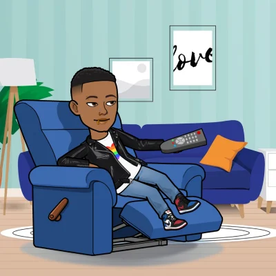
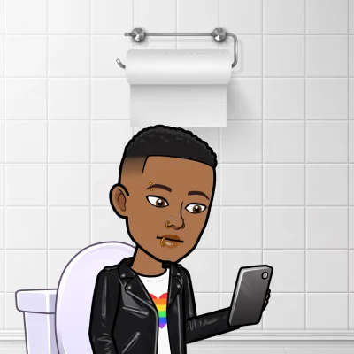
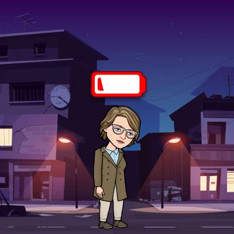
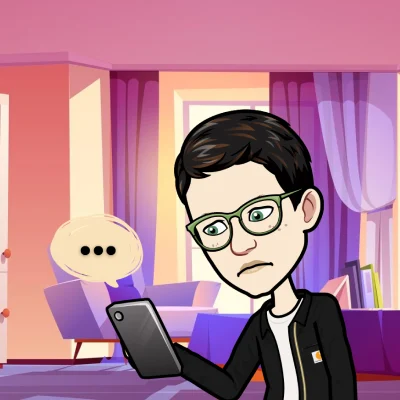
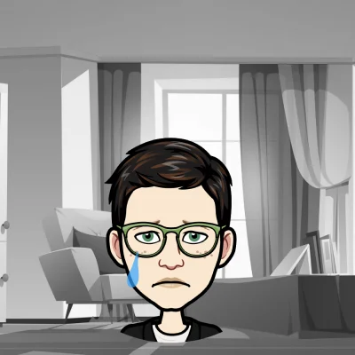
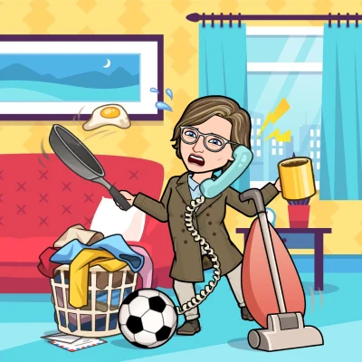
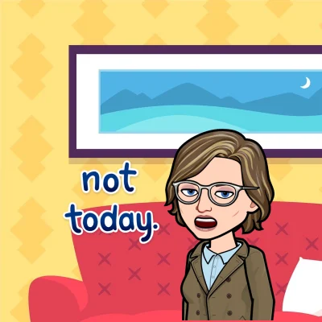
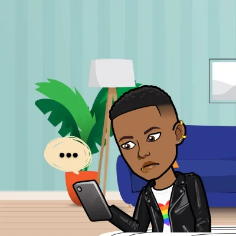
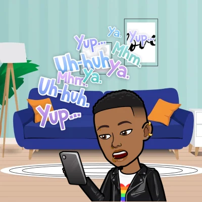
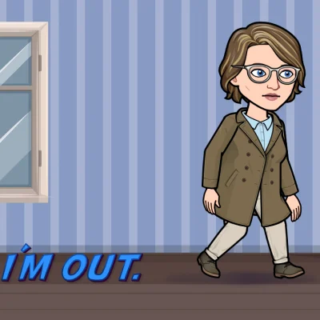
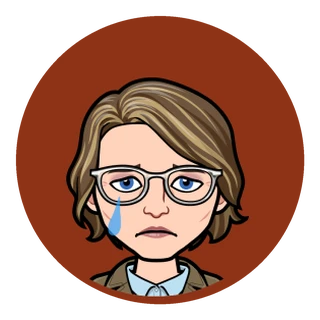
How the week ends
Emily and Eric share a love of theatre and cinema, and both want something serious. Eric even swiped right on Emily, but they never matched. Both deleted the app. The rest of the project was about changing that ending.
We turned Emily and Eric into detailed personas, checked them with more semi-structured interviews, and mapped Emily's journey from download to uninstall.
The busy professional · 32 · lawyer · San Francisco
Ambitious and career-driven, with little free time. Acts part-time in her local theatre and isn't afraid to speak her mind.
The quiet creative · 28 · software engineer · San Francisco
Introverted but very thoughtful, mature and ambitious for his age. Writes scripts for plays in his free time.
We mapped Emily's experience on Tinder from first download to uninstall. Her mood peaks when she finally finds someone she likes, then collapses when she learns they want different things.
| Stage | What happens | Opportunity |
|---|---|---|
| 1 · Entice | Lonely and busy, she tries Tinder on a friend's advice, despite hearing it doesn't work. | Position SoulMate as an app built for relationships. |
| 2 · Entry | Sign-up asks only basic details. Nothing about who she is. | Ask personality and interest questions during setup. |
| 3 · Explore | Swipes on photos with no personality to go on, can't filter by interests, gets flooded with matches and doesn't know who to talk to. | Richer profiles, interest-based filters, conversation prompts and a cap on active chats. |
| 4 · Detach | Learns her match wants something different. Back to talking to strangers. | Show intentions and preferences on profiles. |
| 5 · Exit | "I've had 100s of matches and spent 100s of dollars." She uninstalls. | Shorten the path from install to a real connection. |
Putting the research and the story together gave us a revised problem statement with five parts, each specific enough to design against.
Matching and filters run on looks, age and location, so compatibility is low.
Profiles don't show personality, and misrepresenting yourself is easy.
Endless options lead to constant comparison and a hunt for someone "better".
A few people get flooded with matches while many get almost none, and both sides lose out.
Nobody knows how matches are made, so people distrust the results.
We turned the journey map's opportunities into five solutions in a series of workshops. Each one addresses a specific problem from the statement and comes with a testable hypothesis.
Cap the number of active matches and chats. When options are scarce, each one matters more, so people stop collecting matches they never message.
Limiting matches and chats will motivate people to engage more with the matches they have.
A quiz during profile setup covers the personality traits linked to compatibility, along with interests, values, intentions and relationship preferences. This gives the app a much fuller picture of each person than a few photos.
Exact-match systems like Badoo's miss related interests, so I ran a small proof of concept in Python and TensorFlow. I used Google's Universal Sentence Encoder to score how semantically similar Emily's and Eric's interests are. Theatre and cinema score high even though no keyword matches.
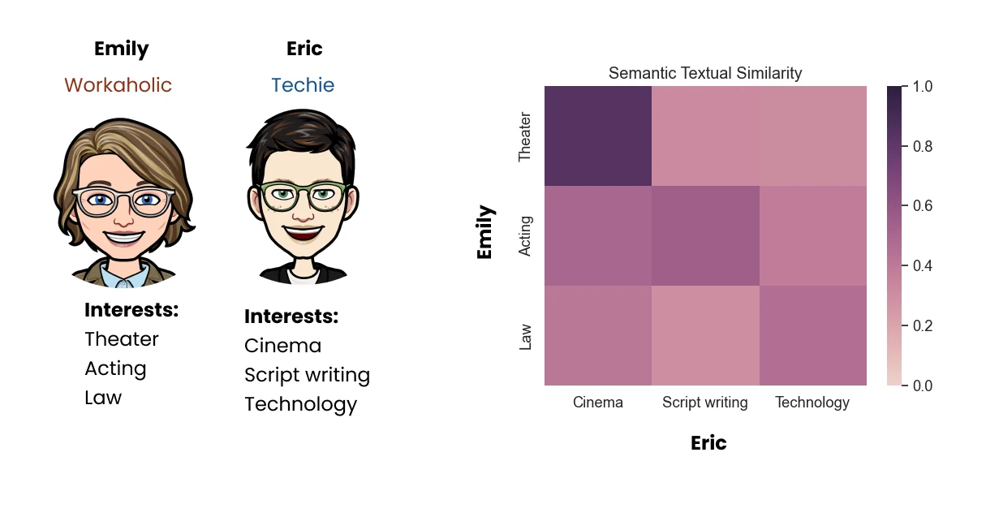
The proof of concept: semantic similarity finds shared ground that keyword matching misses.
"These things are generally difficult to predict based on a single factor alone, but we do know that shared interests and some personality traits can play a major role when it comes to compatibility."Psychometrician, University of Oxford
"I believe your solution has potential to alleviate some of these issues and am excited to see what the results are."Same expert interview
We went through the problem and the quiz concept in a two-hour interview with a psychometrician from the University of Oxford. They confirmed a pattern we had seen in the research: offline, people judge a partner against their own criteria, but online they judge each person against everyone else in the pool.
Interests, preferences and personality can predict romantic compatibility.
Instead of an endless deck of profiles, people get a short list of recommended profiles with personality information shown upfront. Comparing a few people is still possible, but the damage from endless side-by-side comparison drops sharply.
People will judge compatibility better when personality information is shown upfront.
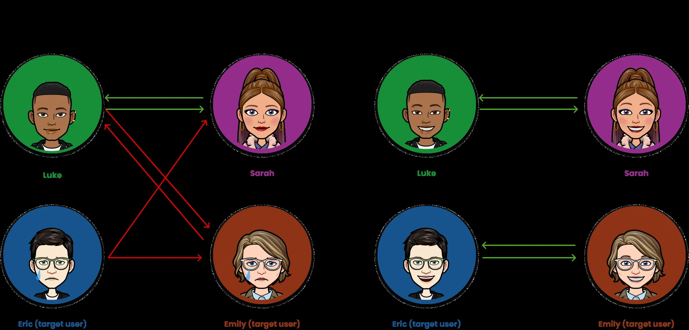
A new ending
With personality and interests driving the list, Emily and Eric find each other. Luke and Sarah, who both want something casual, find each other too. Nobody wastes their week.
Filters are built on the quiz data, and surface filters like height and weight are removed. We'd find out which filters actually help by testing them in the app, so the set stays useful without being needlessly strict. This also answers the worry from our fieldwork that personality matching could shut people out.
People don't realise how restrictive they're being when they apply filters.
This is the part I'm proudest of, because it approaches the problem as a system rather than a single screen. Profiles would show metrics like a compatibility score and a reply ratio. If Luke matches with lots of people but rarely replies, his ratio falls, fewer people spend likes on him, and he has more reason to actually talk to his matches. Eric replies to everyone, so his high ratio draws more matches.
repliedno reply
Once the ratio is visible, people message Eric more and Luke less, and their matches even out.
Metrics shown on a profile will change how people decide who to match with.
how today's apps rank people
how SoulMate would rank people
SoulMate was a concept, not a shipped product. What it produced was a clearly defined, evidence-backed opportunity:
I look for the real problem before designing features. I check what people say against what they do, back findings with statistics and published research, and design for how the whole system behaves, not just individual screens.
Selected sources